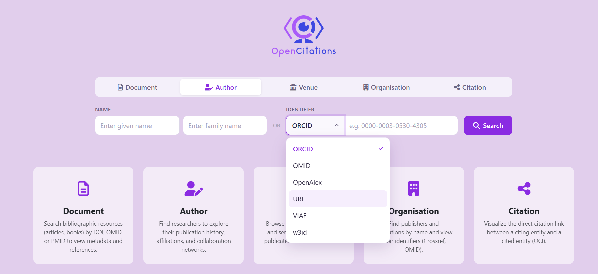
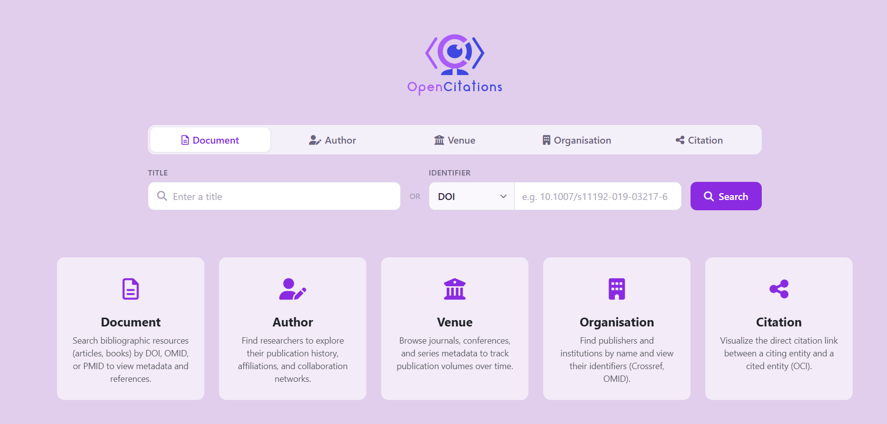
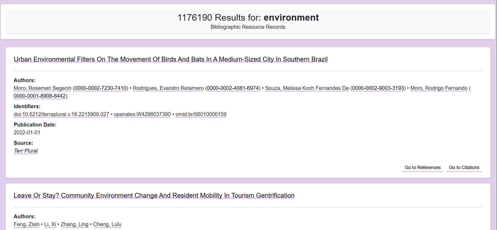
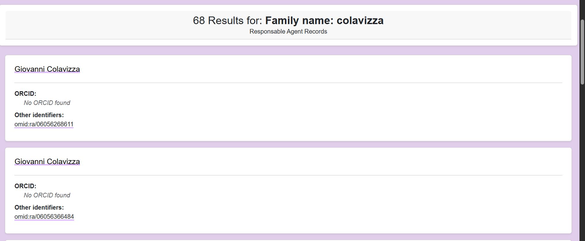
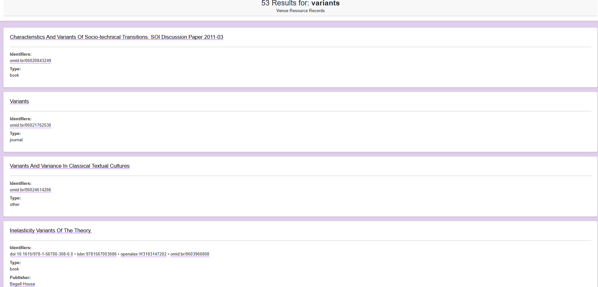
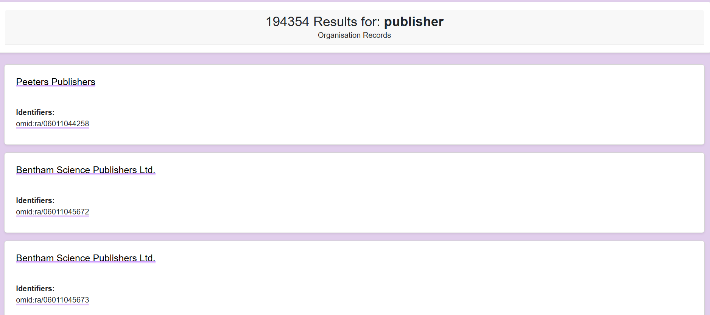
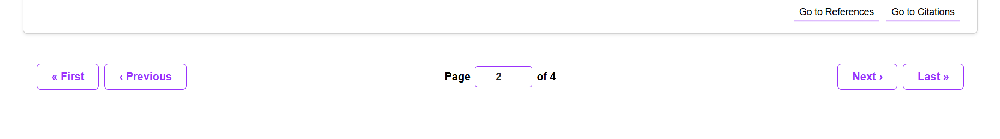
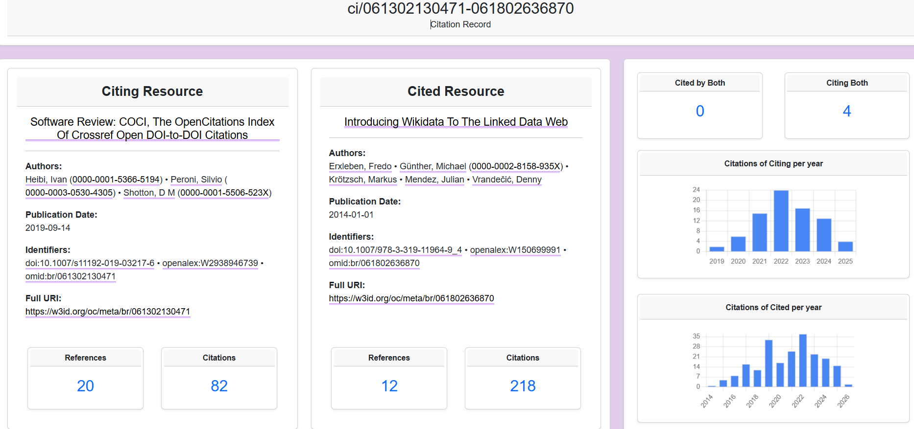
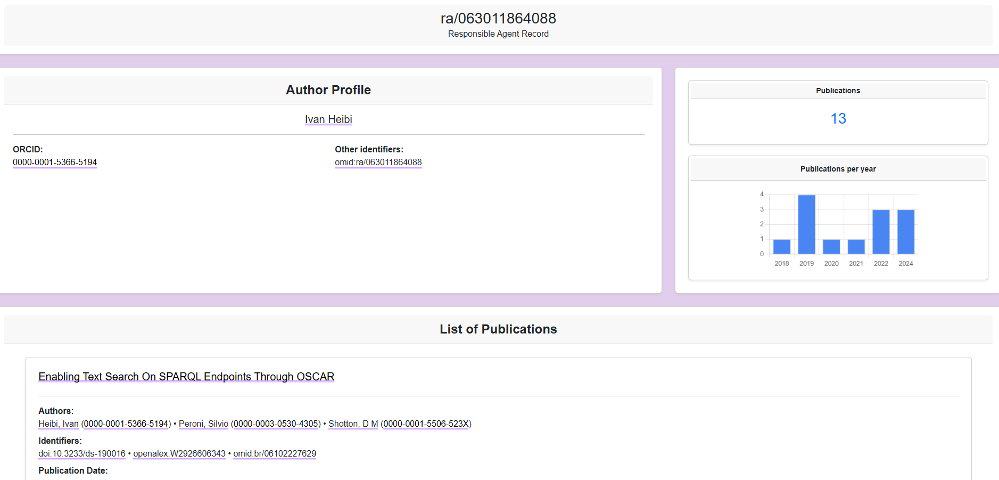

Interfaccia di ricerca (home)


Risultati di ricerca
Ogni ricerca fa una chiamata per pagina (10 risultati); il totale arriva nella stessa risposta (meta.part_of.total_items). Solo le venue fanno chiamate in più.
Document
- testo:
/products?filter=cf.search.title:<testo> - ID:
/products?filter=identifiers.scheme:<schema>,identifiers.id:<valore> - OMID:
/products/<OMID completo>
| Campo | Campo JSON-LD | Link |
|---|---|---|
| Titolo | titles | scheda documento |
| Authors | contributions con ruolo author (gli altri ruoli, publisher compreso, sono scartati) | profilo autore |
| Identifiers | identifiers + OMID | siti esterni (doi.org, PubMed…); OMID → record OC Meta |
| Publication Date | manifestations[].dates.publication (AAAA-MM-GG, altrimenti "Unknown") | — |
| Source | manifestations[].biblio.in: nome della venue + suoi ID (riga assente se manca) | scheda venue |
| Pulsanti | "Go to References" / "Go to Citations" | liste riferimenti / citazioni |

Author
- testo:
/persons?filter=cf.search.given_name:<nome>,cf.search.family_name:<cognome> - ID / OMID: come sopra, su
/persons
| Campo | Campo JSON-LD | Link |
|---|---|---|
| Nome | name (oppure given_name + family_name) | profilo autore |
| ORCID | identifiers con schema orcid (se manca: "No ORCID found") | orcid.org |
| Other identifiers | gli altri identifiers + OMID | siti esterni; OMID → record OC Meta |

In ogni pagina i nomi che corrispondono esattamente alla ricerca vengono messi per primi.
Venue
- testo:
/venues?filter=cf.search.name:<testo> - ID:
/venues?filter=identifiers.scheme:<schema>,identifiers.value:<valore> - OMID:
/venues/<OMID completo> - per ogni card:
/products/<OMID della venue>(publisher ed editor)
| Campo | Campo JSON-LD | Chiamata |
|---|---|---|
| Nome (→ scheda venue) | name | 1ª (/venues) |
| Identifiers | identifiers + OMID (OMID → record OC Meta) | 1ª |
| Type | type (journal, book, conference…) | 1ª |
| Publisher | contributions con ruolo publisher (riga assente se manca) | 2ª (/products/<omid>) |
| Editor | contributions con ruolo editor (riga assente se manca) | 2ª |

Organisation
- testo:
/organisations?filter=cf.search.name:<testo> - ID / OMID: come sopra, su
/organisations
| Campo | Campo JSON-LD | Link |
|---|---|---|
| Nome | name | scheda organizzazione |
| Identifiers | identifiers (Crossref ID, se c'è) + OMID | OMID → record OC Meta |

Chiamate per pagina
| Risorsa | Chiamate |
|---|---|
| Document | 1 |
| Author | 1 |
| Venue | 1 su /venues + 1 su /products/<omid> per ogni card (fino a 10) |
| Organisation | 1 |

- Cambiando pagina parte una nuova chiamata con
&page=N(per le venue di nuovo 1 + 10). - Le risposte restano in cache: tornando a una pagina già vista non parte nessuna chiamata.
Ricerca per identificativo
- Nella home, per ogni risorsa (tranne Citation), c'è il pannello [schema ▾] [valore], in alternativa al testo libero.
- Il menu offre tutti gli schemi SKG-IF adatti alla risorsa (lista da skg-if.github.io/interoperability-framework)
| Risorsa | Schemi |
|---|---|
| Document | DOI, arXiv, Bibcode, Handle, ISBN, IVOID, OMID, OpenAlex, PMCID, PMID, SPASE, URL, URN, w3id |
| Author | ORCID, OMID, OpenAlex, URL, VIAF, w3id |
| Venue | ISSN, DOI, eISSN, ISBN, ISSN-L, OMID, OpenAlex, URL, w3id |
| Organisation | Crossref ID, OMID, OpenAlex, ROR, URL, VIAF, w3id |
Esempi da cercare
| Risorsa | Schema | Valore | Risultato |
|---|---|---|---|
| Document | DOI | 10.1007/s11192-019-03217-6 | Software Review: COCI… |
| Document | PMID | 24936838 | 1 risultato |
| Document | PMCID | PMC7500415 | 1 risultato |
| Document | arXiv | 1909.01284 | Gender-Based Homophily In Collaborations… |
| Document | ISBN | 9780203417447 | 1 risultato |
| Document | OpenAlex | W4409315295 | 1 risultato |
| Document | OMID | br/06010123732 | 1 risultato |
| Author | ORCID | 0000-0003-0530-4305 | Silvio Peroni (10 record) |
| Author | ORCID | 0000-0002-8420-0696 | Arcangelo Massari (2 record) |
| Author | OMID | ra/0614010840729 | 1 risultato |
| Venue | ISSN | 0138-9130 | Scientometrics (57 record) |
| Venue | ISBN | 9783662685099 | Chirurgische Proktologie (12 record) |
| Venue | OpenAlex | S148561398 | Scientometrics (57 record) |
| Venue | OMID | br/06010060186 | 1 risultato |
| Organisation | Crossref ID | 78 | Elsevier BV |
| Organisation | Crossref ID | 297 | Springer Science and Business Media LLC |
| Organisation | OMID | ra/0610116009 | 1 risultato |
Pagina del record di citazione
Input
- Dalla home si scrive l'OCI:
ci/<OMID citing>-<OMID cited>, es.ci/061302130471-061802636870 - si potrebbe accettare una coppia di DOI (citing + cited): 2 chiamate SKG-IF per trovare i due OMID, poi costruzione OCI
- Al momento la ricerca funziona solo con
ci/("No template is suitable").

Chiamate: 8 SKG-IF in parallelo + 2 Index per i grafici
| # | Cosa | Endpoint |
|---|---|---|
| 1-2 | card citing e cited | /products/<OMID> |
| 3-4 | References / Citations del citing | /products?filter=cf.cited_by:<citing> / cf.cites:<citing> |
| 5-6 | References / Citations del cited | /products?filter=cf.cited_by:<cited> / cf.cites:<cited> |
| 7 | Cited by Both | /products?filter=cf.cited_by:<citing>,cf.cited_by:<cited> |
| 8 | Citing Both | /products?filter=cf.cites:<citing>,cf.cites:<cited> |
| 9-10 | grafici per anno (citing e cited) | Index: /index/v2/citations/omid:br/<id> |
- Le chiamate 3-8 leggono solo il totale (
page_size=1→meta.part_of.total_items), senza scaricare le liste. - L'esistenza della citazione si controlla nella lista
related_products.citesdel citing (quello che cita): nessuna chiamata in più. Verifica: /products/…/br/061302130471 (inrelated_products.citesc'è…/br/061802636870) - Cited by Both / Citing Both: con SKG-IF 1 chiamata (il confronto lo fa l'API); con l'Index bisognerebbe scaricare due liste intere e confrontarle
cf.cites:X= documenti che citano X (Citations);cf.cited_by:X= documenti citati da X (References); la virgola = E.
Come partono le 8 chiamate
Le gestisce una funzione JS dedicata, api_citation_record_skgif() (localbrowser.js, sezione 8), chiamata dal .hf con #callfun, senza plugin. Le 8 chiamate SKG-IF partono tutte insieme (Promise.all) perché sono indipendenti. Fino all'ultima risposta resta il banner "Loading the resource...", poi la funzione riempie i campi e mostra la pagina. I 2 grafici dell'Index partono dopo, a pagina già visibile. Se qualcosa fallisce, la pagina si mostra lo stesso con un messaggio di errore.
Il grafico
- Il grafico ha bisogno della data di ogni citazione: SKG-IF non ha filtri per data: bisognerebbe scaricare tutte le citazioni
- L'Index restituisce tutte le citazioni con la data (
creation) in una chiamata, es. /index/v2/citations/omid:br/061802636870 - Nuova funzione
_skgifCitationsPerYearChart(boxId, id)(localbrowser.js, sezione 8), riutilizzabile - Le citazioni senza data vengono saltate
- mostra solo gli anni con almeno una citazione
- Il totale del grafico può essere un po' più basso del contatore (grafico by Index, contatore by SKG-IF).
i numeri
- Tra index ed SKG-IF numeri possono differire di poco
Citazioni di br/061802636870 | Link | Risultato |
|---|---|---|
| SKG-IF | /products?filter=cf.cites:…/br/061802636870 | 218 (total_items) |
| Index | /index/v2/citation-count/omid:br/061802636870 | 217 |
Scheda autore
- Si apre cliccando un autore (in un risultato di ricerca o in un'altra scheda):
browser.html?value=ra/<OMID> - Una funzione JS dedicata,
api_author_record_skgif(), fa partire le chiamate 1 e 2 insieme (Promise.all): sono indipendenti. Finché non arrivano, la pagina resta nascosta con il banner "Loading the resource..."; poi riempie i campi e mostra la pagina. Le pagine successive della lista si caricano con "Next" (la successiva viene già preparata in sottofondo). Il grafico (chiamata 3) parte dopo, a pagina già visibile, così non la rallenta. - SKG-IF non permette di distinguere i ruoli: non esiste un filtro per ruolo. Il filtro
contributions.by.local_identifierrestituisce tutti i lavori in cui la persona compare nellecontributions, con qualunque ruolo. - Quindi lista e totale Publications contengono sia i lavori da author sia quelli da editor
- da fare: aggiungere alla lista delle pubblicazioni il campo Editors (nessuna chiamata in più:
contributions) - Prima ordine dei lavori per data, dal più recente. Con SKG-IF non si può
- SKG-IF non ha date filtrabili: bisognerebbe scaricare tutti i lavori. L'API REST di OpenCitations Meta restituisce tutti i lavori del record con la data (
pub_date) in 1 chiamata. Stessa soluzione usata per i grafici delle citazioni (lì con l'Index). - differenza: per ora il grafico usa solo
/meta/v1/author/, che restituisce solo i lavori da author, mentre il contatore SKG-IF ha tutti i ruoli. I lavori senza data saltano nel grafico. - Da fare: aggiungere la chiamata a
/meta/v1/editor/e togliere i duplicati (lavori in cui è sia author sia editor), così il grafico conta sia le pubblicazioni da author sia quelle da editor e torna con il totale SKG-IF. /meta/v1/editor/omid:ra/0614010840729 - Disegno del grafico in comune con quelli delle citazioni:
_skgifYearChart(); la funzione dell'autore è_skgifPublicationsPerYearChart()(sez 8, js) - /meta/v1/author/omid:ra/0614010840729
- Scheda venue
- Scheda organisation
- Modificare l'intestazione dei risultati (es. come una reference bibliografica)
- Publisher ed editor: dove inserirli?
- Publisher ed editor: dove puntano? Publisher → futura scheda organisation; editor → profilo autore (distinguendo author/editor)? Oppure la pagina del record OpenCitations Meta
- Contatori di References e Citations: SKG-IF/Index
- Metadati della citazione Esistono solo nell'Index. Es: /index/v2/citation/061302130471-061802636870
- Input del record di citazione:coppia di DOI (citing + cited)?
- Profilo autore: distinguere author ed editor?. Esempio di persona sia author sia editor: /products?filter=contributions.by.local_identifier:…/ra/067073407
- filtro su venue

Chiamate: 2 SKG-IF in parallelo + 1 Meta per il grafico
| # | Cosa | Endpoint |
|---|---|---|
| 1 | nome, ORCID, altri identificativi | /persons/https://w3id.org/oc/meta/ra/<OMID> |
| 2 | lavori (a pagine) + totale Publications (total_items) | /products?filter=contributions.by.local_identifier:<OMID completo> |
| 3 | grafico per anno | Meta REST: /meta/v1/author/omid:ra/<OMID> |